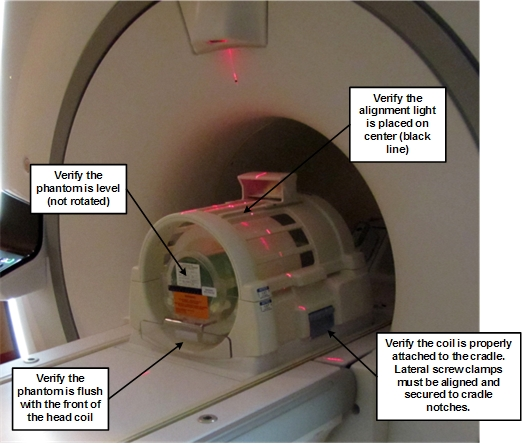
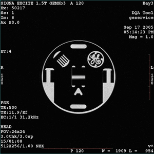

Operating Documentation
Direction 5670006, Rev# 1
Discovery MR750w GEM Service Methods
Module Version 19.0, Version Date 10/18/11
Operating Documentation |
| Required Persons | Preliminary Reqs | Procedure | Finalization |
|---|---|---|---|
| 1 | Not Applicable | 30 minutes (varies) | 10 minutes |
The DQA II tool will determine proper gradient polarity (positive to positive and negative to negative) and proper gradient wiring (X amp drives X coil, Y amp drives Y coil, Z amp drives Z coil) by scanning a series of Axial and Coronal images of the DQA III Phantom. The tool will also verify that the proper phantom is being used. After proper Gradient orientation is confirmed, the tool will adjust for Z iso-center and gradient calibration. If Z iso adjustments or gradient calibration adjustments are required, the DQA II tool will perform the appropriate iterations to complete so the DQA II tool's completion time will vary.
| Item | Qty | Effectivity | Part# | Manufacturer | |
|---|---|---|---|---|---|
| DQA III Phantom | 1 | - | 2321556 | - | |
| 3.0T TR Split-Top Head Coil | 1 | - | 5182872 | - | |
| Curved Adapter Panel | 1 | GEM systems | 5401439 | - | |
| Condition | Reference | Effectivity |
|---|---|---|
Laser Light Alignment completed. | - | - |
| ||||
Observe the following:
| ||||
Insert the curved adapter (P/N 5401439) into the patient table. Place the head coil on top of the curved adapter. Insert the DQA III phantom (P/N 2321556) into the head coil, and verify its orientation and levelness. Make sure the head coil is securely clamped to the table to avoid the coil moving out of position during table advance to iso-center.
| NOTE: | Never use the touch-and-go landmarking strip when manually landmarking as part of a calibration tool procedure. |
Landmark on the center line of the DQA III phantom. Laser must be in the middle of the black circumferential line on the phantom as shown below.
Illustration 1: Phantom Orientation, Split-Top Head Coil

Start the DQA II tool:
On the Common Service Desktop, select [Calibration Wizard] from the Calibration menu, then Click here to start this tool.
After the Calibration Wizard starts, select [DQA] from the menu. Review and approve the pre and post-dependencies, then select Click here to start this tool to start the procedure.
For non-proprietary mode: From the Common Service Desktop, select [Calibration Wizard] from the Calibration menu, then select Click here to start this tool.
In the new window that displays, click the [Start ] button shown below.
Illustration 2: DQA II at Startup

| NOTE: | All phantom images acquired during the DQA II tool can be viewed in the browser. View these images if problems occur. To stop the DQA II tool without restarting it, click [Abort] at any time. |
As the DQA II tool progresses, the status displays in the Progress area. If problems are encountered, they will display in the Actions Required section.
Illustration 3: DQA Screen with Actions Required

| NOTE: | After resolving the issues in the Actions Required section, to restart the DQA II tool, click the [Restart] button. To stop the DQA II tool without restarting it, click [Abort]. |
After the tool successfully completes its tasks, click the [Exit] button.
Illustration 4: Successful Test

Diagnose the type of error, then use Illustration 5 and the table below to determine recommended solutions if there are failures when using the DQA II tool.
| NOTE: | The first row in the table contains standard language for Step 1 that should be used for all recommended solutions. All subsequent rows containing recommended solutions refer you to the top of the table to perform specific tasks before continuing to the next step. |
Illustration 5: Gradient Direction Conventions Used with DQA II Error Messages

Table 1: Potential DQA II Tool Test Errors
| Symptom in DQA II Tool Actions Required Window | Recommendations | ||
|---|---|---|---|
|
| ||
| One or more gradients appear not to be functioning at all. | Verify that system can properly scan head image. Refer to Reviewing DQA II Images for Verification of Proper Head Scan for proper images. | ||
| Z gradient coil appears to be driven by the wrong gradient input. |
| ||
| Phantom used appears to be wrong and/or severely mispositioned. |
| ||
| Phantom is offset more than ±36 mm along Z. |
| ||
| X and Y gradient coil inputs appear to be swapped. |
| ||
| X and Y gradient polarities appear to be inverted. |
| ||
| X gradient polarity appears to be inverted. |
| ||
| Y gradient polarity appears to be inverted. |
| ||
| Phantom appears to be rotated 16 degrees about the physical Z axis. |
| ||
| Phantom center appears to be offset 20 mm along physical X. |
| ||
| Phantom center appears to be offset 20 mm along physical Y. |
| ||
| Z gradient polarity appears to be inverted. |
| ||
| Phantom appears to be rotated 16 degrees about the physical Y axis. |
|
Review images to verify proper head scan.
| NOTE: | Before performing the steps in this section, check the
following:
|
Open the browser.
Review the last exam.
The DQA II tool scans both Axial and Coronal images. Each scan has its own separate exam. The images to target for review (if needed) are those from the most recent DQA II related exam.
Illustration 6: Example Axial Image at Iso-center, Post Calibration

Illustration 7: Example Coronal Image

| NOTE: | These are sample images. |
Below is an example of phantom rotated counterclockwise, and is grossly offset in the +X position.
Illustration 8: Example Axial Image with Positive Z Axis Rotation and X Axis Offset

Remove service equipment, phantom and head coils.
If this procedure was done as a standalone procedure, perform a SAVEINFO to save the newly created isovector and gradient calibrations. Otherwise, continue with regular system calibrations.